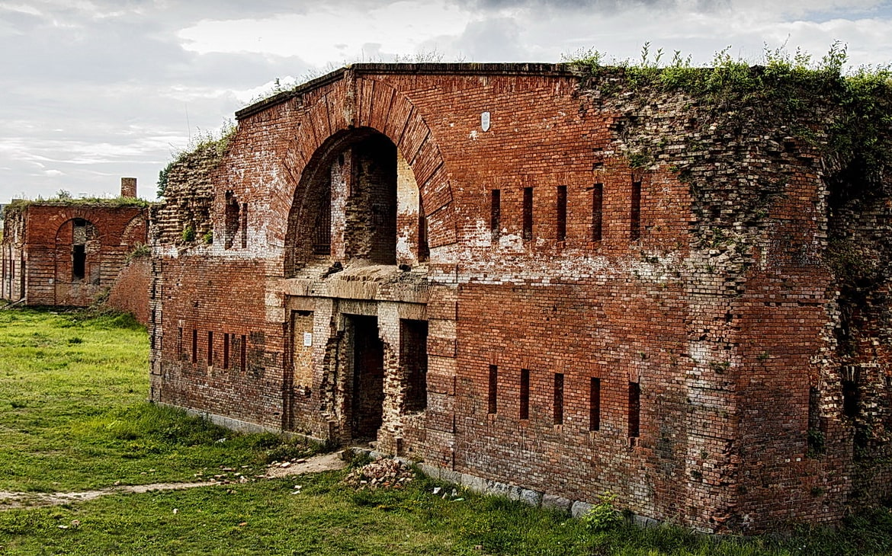
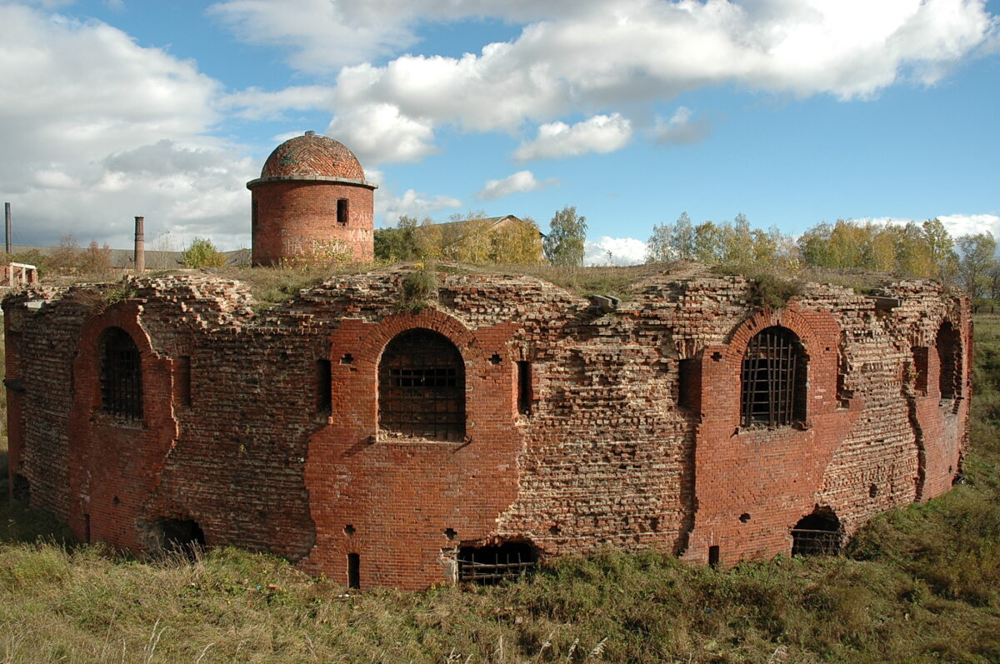

Бобруйская крепость


Бобруйская крепость вошла в историю Беларуси как выдающееся оборонительное
сооружение, памятник архитектуры первой половины XIX века. В начале 1840-х
годов Бобруйская цитадель – "старшая сестра" Брестской крепости – была не
только самой неприступной в Российской империи, но и одной из лучших в
Европе по уровню военного оснащения. С крепостью связаны события войны
1812 года, декабристского движения, Великой Отечественной войны… В 1810
году император Александр I утвердил Бобруйск местом возведения одной из
цитаделей в линии обороны западных границ Российской империи.
Первоначальный план укреплений на месте древнего замка ХIV-ХVII веков в
Бобруйске предложил белорусский военный инженер Теодор Нарбут. Автором
генерального плана и руководителем возведения грандиозной крепости стал
граф Карл Опперман – известный инженер-фортификатор, боевой офицер. Работы
начались 4 июня 1810 года. В строительстве участвовали тысячи солдат и
крестьян, использовались новейшие достижения европейского военного
искусства. Цитадель была причислена к первому классу оборонительных
сооружений империи, ее территория составляла почти 120 гектаров. Крепость
окружали валы высотой до 10 метров и рвы, заполненные водой из Березины и
Бобруйки. На укреплениях размещалось более 300 орудий разных калибров,
запасы боеприпасов были рассчитаны на год, питания – на полгода. В 1812
году Бобруйская цитадель приняла основной удар армии Наполеона, а после
ухода русского войска генерала Багратиона гарнизон 4 месяца сдерживал
осаду французов. На втором этапе строительства (1812-1855) Бобруйская
крепость превратилась в уникальный комплекс, знаменитый не только
укреплениями, но и прекрасной архитектурой в стиле классицизм. Это был
настоящий город с жилыми домами и административными зданиями, мощеными
улицами, ботаническим садом и сквером, собором Александра Невского. На
эспланаде перед крепостью проходили военные парады, ярмарки. В 1820-23
годах в крепости служили организаторы декабристского движения, среди
которых руководители Южного общества. Именно здесь был разработан
легендарный "Бобруйский план" захвата Александра I, который не
осуществился. А в 1825 году крепость превратилась в казематы для
политических заключенных и декабристов, отбывавших наказание после
восстания на Сенатской площади. В 1868 году Бобруйскую цитадель перевели
во второй класс (она уже находилась вдалеке от границ), в 1886-м –
преобразовали в крепость-склад… Но история цитадели, которая перестала
быть стратегическим объектом, продолжалась. Во время Великой Отечественной
войны здесь существовал немецкий концлагерь для советских военнопленных,
где погибли около 40 тысяч солдат и 40 тысяч мирных жителей. Позже здесь
размещались воинские казармы, склады. Многие сооружения легендарного
бастиона в 50-80-е годы ХХ века были разрушены, но часть сохранилась до
наших дней. В 2002 году памятник истории и архитектуры "Бобруйская
крепость" внесен в Государственный список историко-культурных ценностей
Республики Беларусь. Из бастионов цитадели сохранилось меньше половины,
около 50 объектов – башня, "горжевые редуиты", казармы – значительно
повреждены. В ближайшие годы планируется восстановление смотрового моста,
Минских ворот и других сооружений. По проекту крепость должна превратиться
в историко-культурный комплекс с музеями, экскурсионным бюро, сувенирными
лавками, кафе.